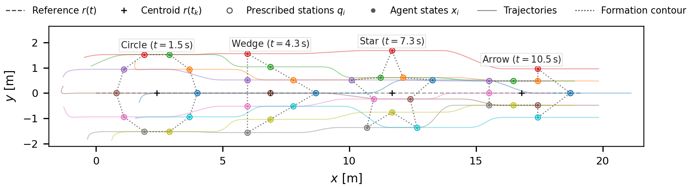
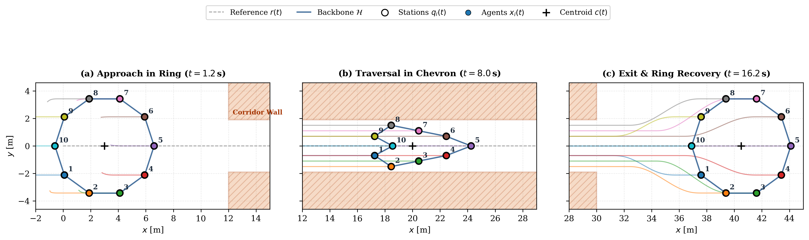
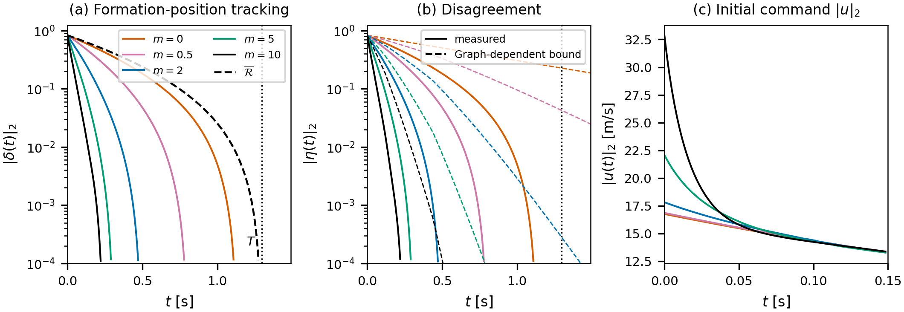

Compression · $m=70$
Compression: higher gain
The numerically evaluated certificate holds for this case; observed separation stays above $d_{\mathrm{safe}}$ and the selected backbone stays within $R_c$.
Finite-time formation transitions are useful for coordinating multi-agent systems in time-critical missions, but convergence to a prescribed formation in finite time does not guarantee collision avoidance or communication connectivity during the transition. Existing approaches address finite-time coordination and safety-constrained formation control, yet explicit connections between disagreement during transitions, formation geometry, and coupling-gain selection need to be developed for certifying safe maneuvers. This paper develops a disagreement-based framework for certifying transient safety and connectivity during finite-time tracking of arbitrary prescribed formation trajectories. Local feedback guarantees exact finite-time tracking with a graph-independent settling-time bound, while a graph-dependent disagreement bound is used to derive sufficient geometric conditions for collision avoidance and connectivity preservation. These conditions further yield an offline coupling-gain selection rule based on the available geometric clearance. Numerical simulations illustrate the trade-off between convergence rate and control effort as the coupling gain increases. They also demonstrate the effectiveness and conservatism of the proposed certificates.
We formulate a distributed first-order kinematic protocol for $n$ agents moving in $\mathbb{R}^d$ ($d \ge 1$). Each agent tracks an independently prescribed, continuously differentiable formation position relative to a moving reference:
where $r(t) \in \mathbb{R}^d$ is the reference trajectory, $p_i(t) \in \mathbb{R}^d$ is the prescribed formation offset, and $\delta_i(t)$ is the tracking error. The distributed kinematic protocol specifies the commanded velocity as:
where $[\Phi_\beta(z)]_k = \operatorname{sign}(z_k)|z_k|^\beta$ ($0 < \beta < 1$) is a component-wise fractional-power feedback, $M \in \mathbb{R}^{d \times d}$ is a symmetric positive semi-definite cooperative coupling matrix ($M = m I_d$ with coupling gain $m \ge 0$), and $w_{ij}(t) \ge 0$ are symmetric, distance-dependent weights with uniform lower bound $\underline{w} = (R_c^\nu + \varepsilon_w)^{-1}$ on active links.
Every agent tracks its desired formation position, with $\delta_i(t) \to 0$ exactly within a deterministic finite-time settling deadline: $$T = \frac{1}{1-\beta} \ln\left(1 + \|\delta(0)\|_2^{1-\beta}\right)$$ The settling deadline $T$ is strictly independent of the interaction graph, edge weights, or network disconnections, providing guaranteed temporal arrival in time-critical missions.
Decomposing tracking errors into the mean error $\bar{\delta}$ and disagreement $\eta_i = \delta_i - \bar{\delta}$, the paper bounds disagreement by an exponential envelope. While all selected backbone links remain active, the envelope satisfies: $$\|\eta(t)\|_2 \le \|\eta(0)\|_2 e^{-\gamma_{\mathcal{H}} t}, \qquad \gamma_{\mathcal{H}} = 1 + \underline{w}\lambda_2(L_{\mathcal{H}})\lambda_{\min}(M)$$ where $L_{\mathcal{H}}$ is the Laplacian of a selected connected spanning subgraph $\mathcal{H}$. The bound using the actual weighted Laplacian also applies across graph switches. The graph-enhanced backbone bound is conditional on backbone persistence, or follows from the first-exit certificate below.
Given physical collision threshold $d_{\mathrm{safe}}$ and sensing/communication radius $R_c$, let the nominal geometric clearance margin be: $$s(t) = \min\left\{\min_{i \ne j} \left(\|x_{d,i}(t) - x_{d,j}(t)\|\right) - d_{\mathrm{safe}}, \; R_c - \max_{(i,j) \in \mathcal{E}_{\mathcal{H}}} \left(\|x_{d,i}(t) - x_{d,j}(t)\|\right)\right\}$$ Define $\rho_0=\sqrt{2}\|\eta(0)\|_2$ and the relative-distortion envelope $\rho_{\mathcal{H}}(t)=\min\{\sqrt{2}\mathcal{R}(t),\rho_0e^{-\gamma_{\mathcal{H}}t}\}$. If $s(t)>\rho_{\mathcal{H}}(t)$ for all $t\ge 0$, then all agent pairs remain separated by more than $d_{\mathrm{safe}}$ and the selected backbone remains within $R_c$. The proof establishes backbone preservation through a first-exit argument.
If the planned geometry satisfies $s(t)>0$ for all $t\ge t_0$ and $0<\rho_0<s(t_0)$, an offline sufficient rate is $\gamma_{\mathrm{req}} = \sup_{t_0 < t < T} \frac{1}{t-t_0}\ln(\frac{\rho_0}{s(t)})$. For $M=mI_d$ and $\gamma_{\mathrm{req}}>1$, it is sufficient to choose: $$m > \frac{\gamma_{\mathrm{req}} - 1}{\underline{w}\lambda_2(L_{\mathcal{H}})}$$ The condition is sufficient, not necessary; failure of the certificate does not establish a violation. When $\gamma_{\mathrm{req}}<1$, $m=0$ also satisfies the rate condition.
We evaluate the framework through numerical simulations with $n=10$ agents in $\mathbb{R}^2$.
For the gains tested in the paper, larger $m$ reduces the observed tracking settling time without changing the graph-independent bound $T \approx 1.3621$ s, while increasing commanded-velocity effort. The listed $J_u=\int_{t_0}^{t_f}\|u(t)\|_2^2dt$ includes station feedforward.
| $m$ | Settling $t_{10^{-6}}$ (s) | Deadline $T$ (s) | Peak $\|u\|_2$ | $J_u$ |
|---|---|---|---|---|
| 0.0 | 1.1517 | 1.3621 | 16.9828 | 429.44 |
| 0.5 | 0.8117 | 1.3621 | 17.0860 | 429.92 |
| 2.0 | 0.5250 | 1.3621 | 18.0322 | 431.55 |
| 5.0 | 0.4467 | 1.3621 | 22.2186 | 434.95 |
| 10.0 | 0.3933 | 1.3621 | 32.8156 | 440.74 |
Table 1: Settling times and control metrics across coupling gains $m$ under rotating star formation ($\kappa=2.0$).
For both aggressive star compression and expansion ($\kappa=15$), we compare gains that satisfy and fail the sufficient certificate, including a weak-coupling case, to illustrate certificate performance and observed outcomes.
| Maneuver | Case | $m$ | $\kappa$ | $\gamma_{\mathcal{H}}$ | $\gamma_{\mathrm{req}}$ | $t_{10^{-6}}$ (s) | $d_{x,\min}$ (m) | $\ell_{x,\max}$ (m) | $\Delta_{\min}$ (m) | Observed Outcome |
|---|---|---|---|---|---|---|---|---|---|---|
| Compression | Certified gain | 70.0 | 15.0 | 11.7786 | 9.3136 | 0.1750 | 1.1473 | 4.1387 | 0.0970 | Certified; safe, connected |
| Uncertified gain | 30.0 | 15.0 | 5.6194 | 9.3136 | 0.1783 | 1.1473 | 4.1387 | -0.2150 | Observed safe, connected | |
| Weak coupling | 1.0 | 15.0 | 1.1540 | 9.3136 | 0.5567 | 0.8990 | 4.1387 | -0.5500 | Separation threshold breached | |
| Expansion | Certified gain | 70.0 | 15.0 | 11.7786 | 7.4220 | 0.2300 | 1.9785 | 5.8490 | 0.1427 | Certified; safe, connected |
| Uncertified gain | 30.0 | 15.0 | 5.6194 | 7.4220 | 0.4000 | 1.9785 | 5.8490 | -0.1180 | Observed safe, connected | |
| Weak coupling | 1.0 | 15.0 | 1.1540 | 7.4220 | 1.0450 | 1.9785 | 6.3214 | -0.4836 | Range violation observed |
Table 2: Certificate and observed transient-geometry outcomes for aggressive star maneuvers ($t\in[0,2.5]$ s).
Explore formation tracking, corridor traversal, and the paper’s compression and expansion results:





Rotating-star compression and expansion at $\kappa=15$, comparing $m=70$ with $m=1$. Each video shows the first 2.5 seconds of the simulation at quarter speed. Solid blue lines show active communication links, the dashed gold line shows the desired formation, and a red dashed line marks a lost selected backbone link.
The numerically evaluated certificate holds for this case; observed separation stays above $d_{\mathrm{safe}}$ and the selected backbone stays within $R_c$.
The minimum inter-agent separation falls below $d_{\mathrm{safe}}$ during the transient. The red warning identifies this safety-threshold violation.
The numerically evaluated certificate holds for this case; the observed selected backbone remains within the communication radius.
A selected backbone edge exceeds $R_c$ during the transient. The red warning and dashed red edge indicate backbone-link loss; other communication paths may remain available.
@article{purswani2026safety,
title = {Safety and Connectivity Certificates for Finite-Time Formation Transitions},
author = {Purswani, Yash and Agarwal, Shivansh and Tiwari, Anuj},
year = {2026},
eprint = {2611.13927},
archivePrefix = {arXiv},
primaryClass = {eess.SY},
url = {https://arxiv.org/abs/2611.13927}
}